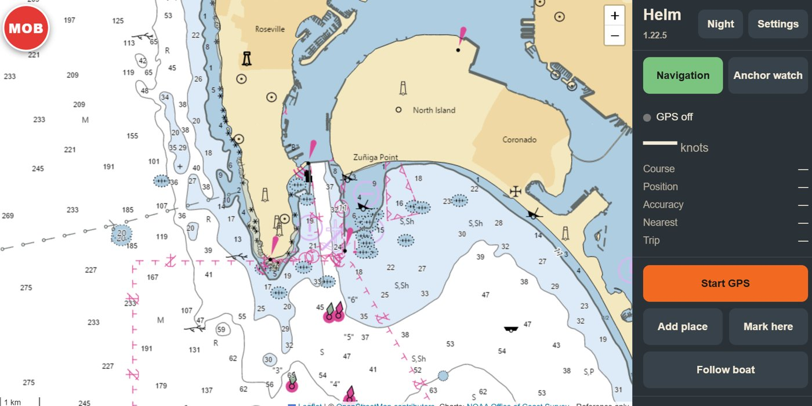
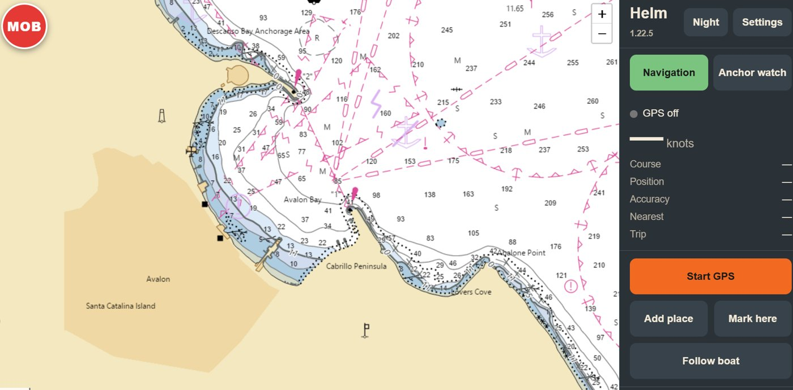

Position and course
See GPS position, speed, course and accuracy, with follow-boat control.
A practical companion for coastal boating in New Zealand and United States waters. It shows your GPS position on official reference charts—LINZ in New Zealand, NOAA in the US—with a one-tap man overboard button, Saved Places, spoken proximity alerts and an adjustable Anchor Watch.

Designed for a tablet or phone at the helm, with large controls and clear information that remains easy to use on the water.
See GPS position, speed, course and accuracy, with follow-boat control.
Set the anchor position and choose an adjustable swing limit for the anchorage.
LINZ charts for New Zealand waters and NOAA charts for US waters. US charts need no account or key.
Store waypoints, hazards and fishing spots with their own map symbols.
Receive spoken alerts near enabled places—even when a category is hidden by a filter.
Save charts for your cruising area to use with no mobile signal, and back up your Saved Places.
If someone goes over the side, hit the big red MOB button. Helm instantly marks your position on the chart, then shows the distance and bearing back to that spot and the time since they went in—with spoken updates, so you can keep your eyes on the water.
The same app, the same controls—LINZ charts in New Zealand, NOAA charts in the United States.


My Helm uses official LINZ reference charts in New Zealand and NOAA charts in the United States. GPS, Anchor Watch and Saved Places work anywhere, but detailed charts cover New Zealand and US waters only.
The demonstration uses a fictional boat route and sample places on a New Zealand (LINZ) or United States (NOAA) chart. It does not request GPS, send notifications, trigger a real alarm or store your changes.
My Helm is a supplementary reference aid. It is not a substitute for current official charts, a compliant chartplotter, prudent watchkeeping, a dedicated anchor alarm, or your man overboard procedures and safety equipment such as a PLB or EPIRB.
Detailed charts cover New Zealand (LINZ) and United States (NOAA) waters. GPS, Anchor Watch and Saved Places work elsewhere, but without detailed chart coverage.
US charts from NOAA need no account or key. New Zealand charts need a free LINZ Data Service access key, which you enter once in Settings.
Yes, for areas you have saved with Download charts. Areas you have not saved need an internet connection.
GPS must be on. Press Start GPS when you leave the dock so Helm is ready to mark the position the moment you press MOB.
No. Saved Places filters change which categories are shown on the map and in the list. Enabled proximity alerts remain active for places hidden by a filter.
No. Anchor Watch is an independent safety tool and remains visible and active separately from Saved Places categories.
No. Treat Anchor Watch as a supplementary aid and maintain prudent watchkeeping and appropriate dedicated equipment.